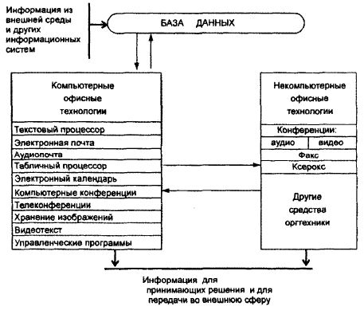
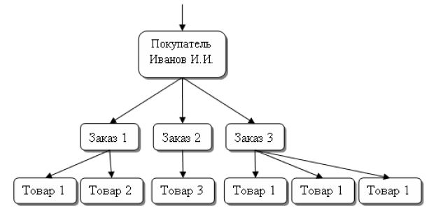

Лекция № 5
Технология автоматизированного офиса
Характеристика и назначение автоматизации офиса
Специалисты традиционных профессий все имеют на своем рабочем месте компьютер и используют информационные технологии в своей профессиональной деятельности.
Создание и редактирование документов с помощью компьютера, т. е. овладение офисными информационными технологиями становится в информационном обществе социально необходимым умением.
Современные информационные технологии позволяют включать в состав документа любые мультимедийные объекты (графику, звук, анимацию, видео), а также создать фотоархив, отсканировав старые фотографии и поместив их в упорядоченном виде в компьютерный фотоальбом, в процессе обучения вы можете подготовить реферат с иллюстрациями, компьютерную презентацию. Умение работать с мультимедиа документами, создавать компьютерные презентации становится важным в информационном обществе.
В современном информационном обществе навыки традиционного черчения на ватмане уходят в прошлое. Вместо этого полезно получить первоначальное представление о назначении и возможностях компьютерных систем автоматизированного проектирования (САПР). Такие системы позволят быстро рассмотреть различные варианты планировки интерьера, создать чертеж или схему.
Использование электронных таблиц сделает более простыми и наглядными процессы исследования и построения графиков функций в процессе изучения математики, построения и исследования моделей различных объектов и процессов.
Необходимость упорядочить информацию, например, о людях, с которыми вы контактируете, требует использования записной книжки. Однако часто удобнее использовать для хранения такой информации компьютерную базу данных «Записная книжка». При поиске информации в современной библиотеке или в Интернете необходимо иметь навыки поиска информации в базах данных. В информационном обществе очень полезным является умение создавать базы данных, а также вести в них поиск данных.
Квалифицированный пользователь компьютера может на основе использования средств визуального объектно-ориентированного программирования создавать необходимые ему специализированные приложения. Например, можно создать приложение, которое автоматизирует заполнение многочисленных квитанций оплаты за квартиру, электроэнергию, газ и др.
Современному человеку необходимо овладеть коммуникативной культурой, т. е. умениями создавать и посылать электронные письма, находить нужную информацию во Всемирной паутине или в файловых архивах и т. д. Необходимым условием успешной профессиональной деятельности становится создание и публикация в Интернете Web-сайтов с информацией о деятельности организации или предприятия.
Информационная культура состоит не только в овладении определенным комплексом знаний и умений в области информационных и коммуникационных технологий, но также предполагает знание и соблюдение юридических и этических норм и правил. Законы запрещают использование пиратского компьютерного обеспечения и пропаганду насилия, наркотиков и порнографии в Интернете. Общение с помощью электронной почты или в чатах, участие в телеконференциях предполагают соблюдение определенных правил: отвечать на письма и не рассылать знакомым и незнакомым людям многочисленные рекламные сообщения (спам), не отклоняться от темы обсуждения в телеконференциях и чатах и т. д.
Информационная технология автоматизированного предприятия (офиса) – организация и поддержка коммуникационных процессов как внутри организации, так и с внешней средой на базе компьютерных сетей и других современных средств передачи и обработки информации.
Автоматизированный офис:
- поддерживает внутреннюю связь персонала;
- дает возможность группового решения задач;
- повышает производительность труда;
- предоставляет новые средства коммуникации с внешним окружением.
Основные компоненты автоматизации офиса
В настоящее время известно несколько десятков программных продуктов для компьютеров и некомпьютерных технических средств, обеспечивающих технологию автоматизации офиса. На рис. 1 изображены основные компоненты автоматизации офиса.

рис. 1 Основные компоненты автоматизации офиса
Текстовый процессор – это вид прикладного программного обеспечения, предназначенный для создания и обработки текстовых документов. Он позволяет добавлять или удалять слова перемещать предложения и абзацы, устанавливать формат, манипулировать элементами текста и режимами и т. д. Регулярное получение подготовленных с помощью текстового процессора писем и докладов.
Электронная почта (е-mail), основываясь на сетевом использовании компьютеров, дает возможность пользователю получать, хранить и отправлять сообщения по сети. Электронная почта может предоставлять пользователю различные возможности в зависимости от используемого программного обеспечения. Чтобы посылаемое сообщение стало доступно всем пользователям электронной почты, его следует поместить на компьютерную доску объявлений.
Аудиопочта – это почта для передачи сообщений голосом. Она напоминает электронную почту, но сообщение вместо набора на клавиатуре передается через телефон. Аудиопочта также реализуется в сети. Почта для передачи аудиосообщений может успешно использоваться для комплексного решения проблем. Главным преимуществом аудиопочты по сравнению с электронной почтой является то, что она проще – при ее использовании не нужно вводить данные с клавиатуры.
Табличный процессор, так же как и текстовый процессор, является базовой составляющей автоматизированной офисной технологии. Функции современных программных сред табличных процессоров позволяют выполнять многочисленные операции над данными, представленными в табличной форме. Объединяя эти операции по общим признакам, можно выделить наиболее многочисленные и применяемые группы технологических операций:
- ввод данных как с клавиатуры, так и из баз данных;
- обработка данных (сортировка, автоматическое формирование итогов, копирование и перенос данных, различные группы oneраций по вычислениям, агрегирование данных и т. д.);
- вывод информации в печатном виде, в виде импортируемых файлов в другие системы, непосредственно в базу данных;
- качественное оформление табличных форм представления данных;
- многоплановое и качественное оформление данных в виде диаграмм и графиков;
- проведение инженерных, финансовых, статистических расчетов;
- проведение математического моделирования и ряд других вспомогательных операций.
Любая современная среда табличного процессора имеет средства пересылки данных по сети.
Электронный календарь предоставляет еще одну возможность использовать сетевой вариант компьютера для хранения и манипулирования рабочим расписанием. Техническое и программное обеспечение электронного календаря полностью соответствует аналогичным компонентам электронной почты, более того, программное обеспечение календаря часто является составной частью программного обеспечения электронной почты.
Компьютерные конференции используют компьютерные сети для обмена информацией между участниками группы, решающей определенную проблему. Круг лиц, имеющих доступ к этой технологии, ограничен. Количество участников компьютерной конференции может быть во много раз больше, чем участников аудио- и видеоконференций.
Телеконференция включает в себя три типа конференций:
- аудио;
- видео;
- компьютерную.
Видеотекст основан на использовании компьютера для получения отображения текстовых и графических данных на экране монитора. Для лиц, принимающих решение, имеются три возможности получения информации в форме видеотекста:
- создать файлы видеотекста на своих собственных компьютерах;
- заключить договор со специализированной компанией на получение доступа к разработанным ею файлам видеотекста;
- заключить договоры с другими компаниями на получение доступа к их файлам видеотекста.
Популярен обмен каталогами и прайс-листами своей продукции между компаниями в форме видеотекста.
Хранение изображений. В любой фирме необходимо длительное время хранить большое количество документов. Их хранение даже в форме файлов вызывает серьезные проблемы. Поэтому возникла идея хранить не сам документ, а его образ (изображение), причем хранить в цифровой форме. Хранение изображений (imaging) – перспективная офисная технология, которая основывается на использовании специального устройства – оптического распознавателя образов, позволяющего преобразовывать изображение документа или фильма в цифровой вид для дальнейшего хранения во внешней памяти компьютера. Для хранения изображений используются оптические диски, обладающие огромными емкостями. Созданию данной технологии способствовало появление нового технического решения – оптического диска в комбинации с цифровой записью изображения.
Базы данных. Обязательным компонентом любой технологии является база данных. В автоматизированном офисе она концентрирует в себе данные о производственной системе, так же как в технологии обработки данных на операционном уровне. Информация в базу данных может также поступать из внешнего окружения фирмы.
Технологии баз данных
Базы данных и системы управления базами данных
База данных (БД) – это структурированный организованный набор данных, описывающий характеристики какой-либо физической или виртуальной системы.
Организация структуры БД формируется исходя из следующих соображений:
- Адекватность описываемому объекту/системе – на уровне концептуальной и логической модели.
- Удобство использования для ведения учёта и анализа данных – на уровне так называемой физической модели.
Для создания и манипулирования базой данных используется специализированная программа, называемая системой управления базой данных (СУБД). Основные функции СУБД:
- управление данными во внешней памяти (на дисках);
- управление данными в оперативной памяти;
- журнализация изменений и восстановление базы данных после сбоев;
- поддержка языков БД (язык определения данных, язык манипулирования данными).
Обычно современная СУБД содержит следующие компоненты:
- ядро, которое отвечает за управление данными во внешней и оперативной памяти и журнализацию;
- процессор языка базы данных, обеспечивающий оптимизацию запросов на извлечение и изменение данных и создание, как правило, машинно-независимого исполняемого внутреннего кода;
- подсистему поддержки времени исполнения, которая интерпретирует программы манипуляции данными, создающие пользовательский интерфейс с СУБД;
- сервисные программы (внешние утилиты), обеспечивающие ряд дополнительных возможностей по обслуживанию информационной системы.
По архитектуре организации хранения данных СУБД подразделяются на локальные (все части локальной СУБД размещаются на одном компьютере) и распределенные (части СУБД могут размещаться на двух и более компьютерах).
По способу доступа к БД СУБД разделяются на файл-серверные и клиент-серверные. Архитектура «файл-сервер» не имеет сетевого разделения компонентов диалога и использует компьютер для функции отображения, что облегчает построение графического интерфейса. «Файл-сервер» только извлекает данные из файлов, так что дополнительные пользователи добавляют лишь незначительную нагрузку на ЦП и каждый новый клиент добавляет вычислительную мощность сети. Минусом этой архитектуры является высокая загрузка сети при передаче данных. На данный момент файл-серверные СУБД считаются устаревшими. Клиент-серверная СУБД позволяет обмениваться клиенту и серверу минимально необходимыми объёмами информации. При этом основная вычислительная нагрузка ложится на сервер. Клиент может выполнять функции предварительной обработки перед передачей информации серверу, но в основном его функции заключаются в организации доступа пользователя к серверу.
В большинстве случаев клиент-серверная СУБД менее требовательна к пропускной способности компьютерной сети, чем файл-серверная СУБД, особенно при выполнении операции поиска в базе данных по заданным пользователем параметрам, т.к. для поиска нет необходимости получать на клиент весь массив данных: клиент передаёт параметры запроса серверу, а сервер производит поиск по полученному запросу в локальной базе данных. Результат выполнения запроса, который обычно на несколько порядков меньше по объёму, чем весь массив данных, возвращается клиенту, который обеспечивает отображение результата пользователю.
Классификация БД по виду модели
Существующие виды концептуальных и логических моделей БД – это картотека, сетевая модель, иерархическая модель, реляционная модель, многомерная модель, объектная модель. Рассмотрим эти модели по отдельности.
Картотека. Картотекой называется систематизированное хранилище информации, как правило, в форме карточек с некоторыми данными. Встретиться с картотекой до сих пор можно, к примеру, в библиотеке: в виде картотеки зачастую представляется библиотечный каталог. Картотеками повсеместно пользовались до появления электронных баз данных: в настоящее время картотеки почти полностью вытеснены последними.
Иерархическая модель. Иерархическая модель базы данных состоит из объектов с указателями от родительских объектов к потомкам, соединяя вместе связанную информацию. Например, если иерархическая база данных содержит информацию о покупателях и заказах, то будет существовать родительский объект «покупатель» и дочерний объект «заказ». В этой модели запрос, направленный вниз по иерархии, прост (пример: «какие заказы принадлежат этому покупателю?»), однако запрос, направленный вверх по иерархии, более сложен (например, «какой покупатель поместил этот заказ?»). Также, трудно представить не-иерархические данные при использовании этой модели.

рис. 2 Пример построения иерархической БД
Типичным (наиболее известным и распространенным) примером иерархической СУБД является Information Management System (IMS) фирмы IBM, первая версия которой появилась в 1968 году. Известны также Time-Shared Date Management System (TDMS) компании Development Corporation, Mark IV Multi-Access Retrieval System компании Control Data Corporation и некоторые другие.
Сетевая модель. Сетевые базы данных подобны иерархическим, за исключением того, что в них имеются указатели в обоих направлениях, которые соединяют родственную информацию. К основным понятиям сетевой модели базы данных относятся уровень, элемент (узел), связь. Узел – это совокупность атрибутов данных, описывающих некоторый объект. В сетевой структуре каждый элемент может быть связан с любым другим элементом.
Несмотря на то, что эта модель решает некоторые проблемы, связанные с иерархической моделью, выполнение простых запросов остается достаточно сложным процессом. Также, поскольку логика процедуры выборки данных зависит от физической организации этих данных, то эта модель не является полностью независимой от приложения. Другими словами, если необходимо изменить структуру данных, то нужно изменить и приложение.
Реляционная модель. Реляционная база данных основана на т.н. реляционной модели, представляющей собой строгую формальную теорию. Принципы реляционной модели были сформулированы в 1969-1970 годах доктором Эдгаром Коддом из компании IBM. Эта модель характеризуется простотой структуры данных, удобным для пользователя табличным представлением и возможностью использования формального аппарата алгебры отношение и реляционного исчисления для обработки данных.
Реляционная модель ориентирована на организацию данных в виде двумерных таблиц. Каждая из этих таблиц обладает следующими свойствами:
- Каждый элемент таблицы – один элемент данных.
- Все столбцы в таблице однородны, т.е. все элементы в столбце имеют одинаковый тип (числовой, символьный и т.д.).
- Каждый столбец имеет уникальное имя.
- Одинаковые строки в таблице отсутствуют.
- Порядок следования строк и столбцов может быть произвольным.
Одним из важнейших в реляционной модели является понятие первичного ключа, обозначающее поле (столбец) или группу полей таблицы базы данных, значение которого (или комбинация значений которых) используется в качестве уникального идентификатора записи (строки) этой таблицы. Смысл использования первичного ключа состоит в том, что в теории реляционных баз данных порядок следования строк в таблице не определен, и, соответственно, единственный способ идентифицировать определенную запись в этой таблице – это указать набор значений одного или нескольких полей, который был бы уникальным для этой записи. Значение первичного ключа используется везде, где требуется указать на конкретную запись. На использовании первичных ключей основана организация связей между таблицами реляционной БД. С этой целью в одну из связываемых таблиц добавляют поле, содержащее значение первичного ключа записи в другой таблице (такое поле называют внешним ключом).
Известны три вида связей между таблицами:
- Связь «один к одному». На каждое значение первичного ключа первой таблицы ссылается не более одной записи второй таблицы.
- Связь «один ко многим». На каждое значение первичного ключа первой таблицы может ссылаться множество записей второй таблицы.
- Связь «многие ко многим». Для организации этой разновидности связи создается отдельная таблица, называемая таблицей связи или таблицей ассоциации, каждая запись которой содержит значения первичных ключей двух связываемых записей в разных таблицах.
Необходимым качеством реляционной базы данных является т.н. ссылочная целостность, заключающаяся в отсутствии в любой таблицы базы данных внешних ключей, ссылающихся на несуществующие записи в этой или других таблицах. База данных, в которой ссылочная целостность нарушена, не может нормально эксплуатироваться, т.к. в ней разорваны связи между зависимыми объектами или даже между частями одного и того же объекта. Непосредственным результатом нарушения ссылочной целостности является то, что корректным запросом не удается выбрать все данные, относящиеся к искомому объекту или группе объектов. Причинами нарушения ссылочной целостности может быть некорректная работа программного обеспечения (неполная запись объектов, некорректная правка ссылки и т.п.) или сбои в работе оборудования.
Обязательным (хотя и не достаточным) условием сохранения ссылочной целостности является поддержка транзакций. Если программное обеспечение выполняет группу связанных между собой операций, которые по отдельности могут приводить к нарушению целостности ссылок, СУБД должна предоставлять возможность выполнения всей этой группы в одной транзакции, т.е. так, чтобы при любом сбое производилась автоматическая отмена всех операций группы, в том числе уже полностью завершенных.
Кроме того, СУБД может иметь механизм автоматического поддержания ссылочной целостности, основанный на явном описании ссылок при создании БД. При описании таблиц БД программист явно описывает, какие поля таблиц являются внешними ключами и на какие таблицы они ссылаются. Эта информация сохраняется в служебных областях памяти БД. Любая операция, изменяющая данные в таблице, вызывает автоматическую проверку ссылочной целостности. При этом:
- При операции добавления или редактирования записи автоматически проверяется, ссылаются ли внешние ключи в этой записи на существующие записи в заявленных при описании связанных таблицах. Если выясняется, что операция приведет к появлению некорректных ссылок, она отменяется.
- При операции редактирования записи проверяется, не изменяется ли ее первичный ключ, и нет ли на нее ссылок. Если первичный ключ изменяется, и при этом на данную запись имеются ссылки, то операция редактирования отменяется или же происходит каскадное обновление внешних ключей в связанных таблицах.
- При операции удаления записи проверяется, нет ли на нее ссылок. Если ссылки имеются, то удаление отменяется, либо происходит каскадное удаление связанных записей.
Для устранения из БД избыточных функциональных зависимостей между полями таблиц используется т.н. нормализация – процесс преобразования БД к виду, соответствующему одной из т.н. нормальных форм. Понятие нормальной формы было введено Эдгаром Коддом при создании реляционной модели БД. Основное назначение нормальных форм – обеспечение минимальной избыточности данных, содержащихся в базе. Каждая нормальная форма представляет собой определенное условие, которому должна соответствовать таблица базы данных. Если таблица не соответствует нормальной форме, она может быть приведена к ней (нормализована) за счет декомпозиции, т.е. разбиения на несколько таблиц, связанных между собой. Обычно выделяют следующие нормальные формы:
- Первая нормальная форма (1NF). Таблица находится в первой нормальной форме, если каждое из ее полей содержит только одно значение, и все строки различны.
- Вторая нормальная форма (2NF). Таблица находится во второй нормальной форме, если она находится в первой нормальной форме, и при этом любое ее поле, не входящее в состав первичного ключа, зависит от первичного ключа, но при этом не находится в зависимости от какой-либо его части.
- Третья нормальная форма (3NF). Таблица находится в третьей нормальной форме, если она находится во второй нормальной форме, и при этом любое ее неключевое поле функционально зависит только от первичного ключа.
Также известны нормальная форма Бойса-Кодда (BCNF), четвертая и пятая нормальные формы (4NF и 5NF), но они при разработке БД используются сравнительно редко.
Многомерная модель. Многомерная модель рассматривает данные либо как факты с соответствующими численными параметрами, либо как текстовые измерения, которые характеризуют эти факты. К примеру, в розничной торговле покупка – это факт, объем покупки и стоимость – параметры, а тип приобретенного продукта, время и место покупки – измерения.
Многомерная модель данных характеризуется следующими преимуществами использования:
- Возможность анализа больших объемов данных с приемлемой скоростью.
- Возможность осуществления любых «срезов» и «углублений» в структуре БД.
- Быстрая локализация трендов и проблемных областей.
Многомерный подход возник практически одновременно и параллельно с реляционным, но только с середины 1990-х годов интерес к многомерным СУБД (МСУБД) начал приобретать всеобщий характер в связи с массовым появлением информационных систем, ориентированных на аналитическую обработку данных.
Объектная модель. В объектно-ориентированной БД данные оформлены в виде моделей объектов, включающих прикладные программы, которые управляются внешними событиями. Объектно-ориентированный подход представляет более совершенные средства для отображения реального мира, чем реляционная модель, т.к. обеспечивают естественное представление данных (в реляционной модели все отношения принадлежат одному уровню, в то время как объектную модель можно рассматривать послойно, на разных уровнях абстракции), и, кроме того, имеется возможность определения новых типов данных и операций с ними. В то же время объектной модели присущ и ряд недостатков: отсутствуют мощные непроцедурные средства извлечения объектов из базы, а вместо декларативных средств ограничений целостности приходится писать процедурный код. Последнее является основной причиной того, что СУБД, использующие объектную модель, пока уступают по распространенности реляционным СУБД. Примеры объектных СУБД: IBM Lotus Notes/Domino, Jasmine, ObjectStore.
СУБД позволяют структурировать, систематизировать и организовать данные для их компьютерного хранения и обработки. Невозможно представить себе деятельность современного предприятия или учреждения без использования профессиональных СУБД. Несомненно, они составляют фундамент информационной деятельности во всех сферах — начиная с производства и заканчивая финансами и телекоммуникациями.